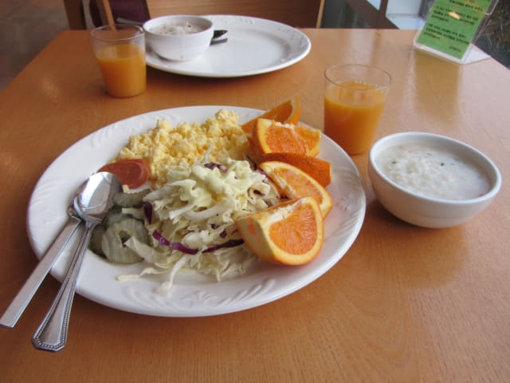
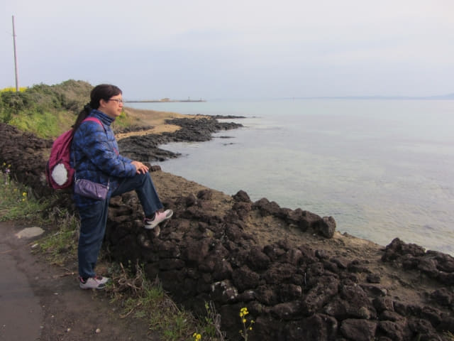
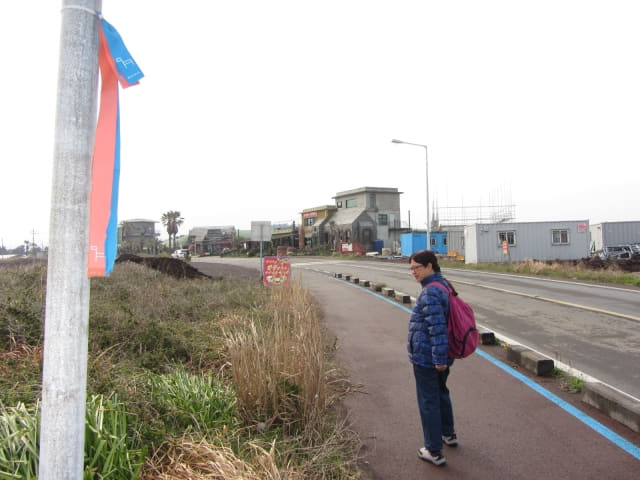
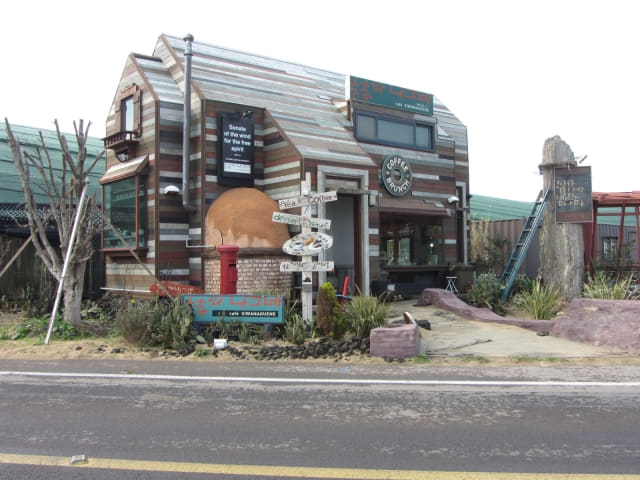
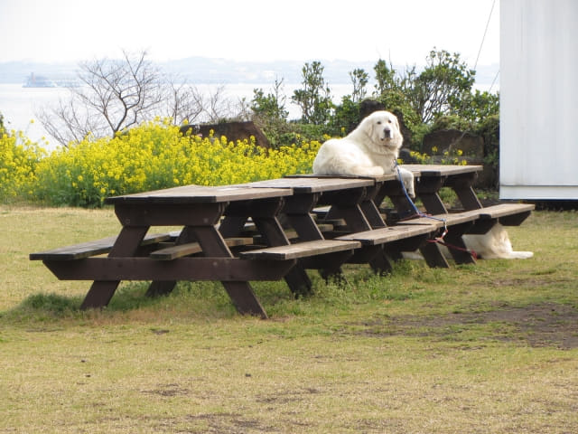
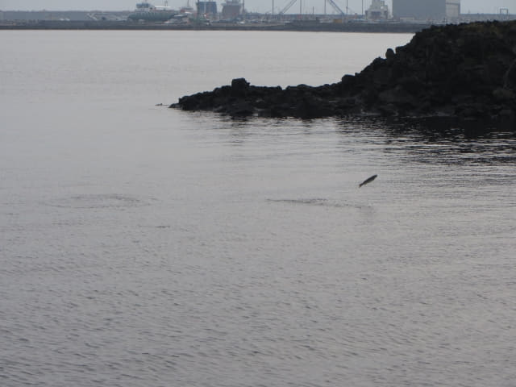
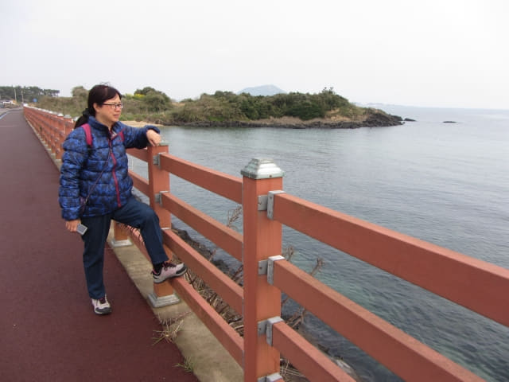
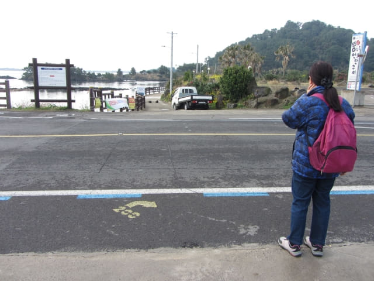

3.29.2017 (星期三)
今天原本安排了往城山日出峰及涉地可支 (섭지코지 Seopjikoji)這兩個景點, 因昨天在黃昏前臨時決定去了城山日出峰, 所以今天在城山只有一個行程, 可以提早乘巴士往濟州島最後一個停留城市 – 濟州市, 也意味這韓國濟州、本島南部春遊第一部份的濟州島行程快將結束了!
早上六時四十五分起床, 梳洗完畢, 乘電梯往酒店一樓餐廳用自助早餐。城山美麗度假村的早餐十分豐富, 一定不會失望。

吃完豐富悠閒自助早餐, 返回房間收拾行李。早上九時離開房間, 將背囊寄存在一樓服務處後 , 接著便開始今日的行程 – 步行往涉地可支, 也是城山最後的一個行程。
走出酒店, 沿城山邑日出海岸走。雖然這段路已經走過幾次, 風景太美, 每次總是忍不住停下來欣賞和拍照。



我們每次經過這高級餐廳, 花園中這兩隻汪汪總是吠過不停, 可能知道我們即將離開城山, 這次出奇地安靜。

海中有一條魚不知什麼原因, 不斷高速的向前衝, 並間歇地跳出水面。


走過城山邑日出海岸, 來到「오조해녀의집」巴士站前的公路。按計劃, 我們會從這裡步行往涉地可支。
